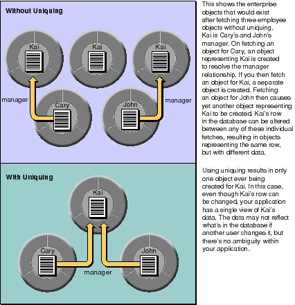

Table of Contents
Table of Contents  Next Section
Table of Contents
Next Section
Table of Contents  Previous Section
Previous Section
Figure 47 provides a high-level view of what happens in Enterprise Objects Framework when you fetch an object.
Figure 47. What Happens During a Fetch
The steps illustrated in Figure 47 are described in detail in the following sections.
EODisplayGroup Receives a fetch Message
A fetch most often begins with an EODisplayGroup receiving a fetch message. If you've configured the display group to "fetch on load," the fetch occurs at the end of display group initialization.
The database data source would already have a fetch specification if you assigned one programmatically or if you assigned one in Interface Builder (or WebObjects Builder in a WebObjects application). Fetch specifications are handled differently depending on how they're configured. This discussion assumes that the fetch specification is a "regular" fetch specification-one that isn't configured to fetch raw rows, to use a custom SQL statement, or to use a stored procedure.
To do this it uses an EODatabaseChannel, whose job is specifically to fetch enterprise objects. The database channel in turn uses an EOAdaptorChannel for low-level communication with the database, along with whatever model objects-EOEntities, EOAttributes, and EORelationships-are needed to perform the fetch.
Fetching objects happens in two major steps:
With respect to locking, note that in addition to setting an overall locking strategy, you can take advantage of EODatabaseContext's "on demand" locking feature to lock individual rows. For more information, see "Locking and Update Strategies".
An EODatabaseContext also posts notifications that your objects can receive and react to.
Inside EODatabaseChannel
In fetchObject, an EODatabaseChannel performs several tasks:
If the fetch specification is set to refresh refetched objects, an ObjectsChangedInStoreNotification (EOObjectsChangedInStoreNotification in Objective-C) is posted to invalidate (refault) any existing instances corresponding to this globalID.
The createInstanceWithEditingContext method provides the enterprise object class's constructor with an editing context, the entity class description, and a globalID. You'll rarely need to use this information at this point, but you might choose to if, for example, you need to extract the primary key from the globalID to do some processing on it.
Note that in Objective-C, the entity class description creates objects and initializes them with the method initWithEditingContext:classDescription:globalID:, if it exists (it uses init otherwise). Your enterprise object class can implement initWithEditingContext:classDescription:globalID: instead of simply init if you need to do anything with the object's editing context, class description, or globalID at this stage in the process.
Your custom enterprise object classes can also implement the method awakeFromInsertion (awakeFromInsertionInEditingContext: in Objective-C), which is invoked immediately after your application creates a new object and inserts it into an EOEditingContext. This method lets you assign values to newly created enterprise objects. For more discussion of this topic, see the chapter "Designing Enterprise Objects".
Flow of Data During a Fetch
The preceding sections describe what happens in Enterprise Objects Framework when you fetch objects from the database. This section describes the flow of data that occurs during a fetch.
Figure 48. Flow of Data During a Fetch
NULL values in the database are mapped to instances of EONullValue (EONull in Objective-C).
Additionally, you can map external data types to custom value classes defined by your application. For more discussion of this subject, see the chapter "Advanced Enterprise Object Modeling".
The dictionary provides a snapshot of the database row, and it's later used to initialize the enterprise object. The snapshot also comes into play when changes to the object are saved to the database; for more discussion of this topic see the section "Snapshots".
The EOModel, which is used to convert database data to objects, is also used when a newly allocated enterprise object is initialized. Whereas the dictionary contains an entry for each of the row's columns (those returned by sending attributesToFetch to an EOEntity), the enterprise object initialized from the dictionary only contains the attributes that are defined in the EOModel as class properties.
When an enterprise object is initialized, EONullValue objects (or EONull objects in Objective-C) are passed to the object as null (nil in Objective-C) so you don't have to write code to handle NULLs.
Also, relationship references are initialized for any relationship properties defined in the EOModel. For example, an Employee object might have a reference to the employee's department, which in database terms represents a join between the EMPLOYEE and DEPARTMENT tables. Class properties that are relationships are represented in the object graph as faults until they're accessed.
Enterprise Objects Framework maintains the mapping of each enterprise object to its corresponding database row, and uses this information to ensure that your object graph does not have two (possibly inconsistent) objects for the same database row.
When objects are fetched, Enterprise Objects Framework records the state of the corresponding database row. This information is used when changes are saved back out to the database to ensure that the row data has not been changed by someone else since it was last fetched. The information is also used to only update attributes that have changed, rather than all of them.
The objects at the destination of a fetched object's relationships are only fetched on demand; however, these objects are represented in your application by stand-in objects called faults to make retrieval of the actual objects easier.
Without uniquing, you'd get a new enterprise object every time you fetch its corresponding row, whether explicitly or through resolution of relationships. This is illustrated in Figure 49.

Figure 49. Uniquing of Enterprise Objects
Snapshots
When an EODatabaseContext fetches objects from the database, it asks its EODatabase to record a snapshot of the state of the corresponding database row.
For more information on snapshots, see the EODatabaseContext class specification in the Enterprise Objects Framework Reference.
Faults
One of the most powerful and useful features of the Framework's database level is that it automatically resolves the relationships defined in a model. It does so by delaying the actual retrieval of data-and communication with the database-until the data is needed. This delayed resolution of relationships occurs in two stages: the creation of a placeholder object for the data to be fetched, and the fetching of that data only when it's needed.
public MyCustomEO (and so is already associated with a particular editing context, a class description, and a globalID. However, the object's data hasn't yet been fetched from the database. This part of the object's initialization is delayed until the object receives a message which requires it to fetch its data.
EOEditingContext anEOEditingContext,
EOClassDescription anEOClassDescription,
EOGlobalID anEOGlobalID)
In Objective-C on the other hand, single-object faults are objects of a special class (EOFault) whose instances transform themselves into actual enterprise objects-and fetch their data-the first time they're accessed. These Objective-C faults occupies the same amount of memory as an instance of the target class (into which it's eventually transformed), and stores the information needed to retrieve the data associated with the fault (the source globalID and relationship name). A fault object thus consumes about as much memory as an empty instance of its target class.
An Objective-C fault behaves in every way possible as an instance of its target class until it receives a message it can't cover for. For example, if you fetch an Employee object and ask for its manager, you get a fault object representing another Employee object. If you send a class message to this fault object, it returns the Employee class. If you send the fault object a message requesting the value of an attribute, such as lastName, however, it uses the EODatabaseContext that created it to retrieve its data from the database, overwrites its class identity, and invokes the target class's implementation of lastName.
Figure 50 illustrates this process.
Figure 50. Resolution of a Fault Object
Table of Contents Next Section